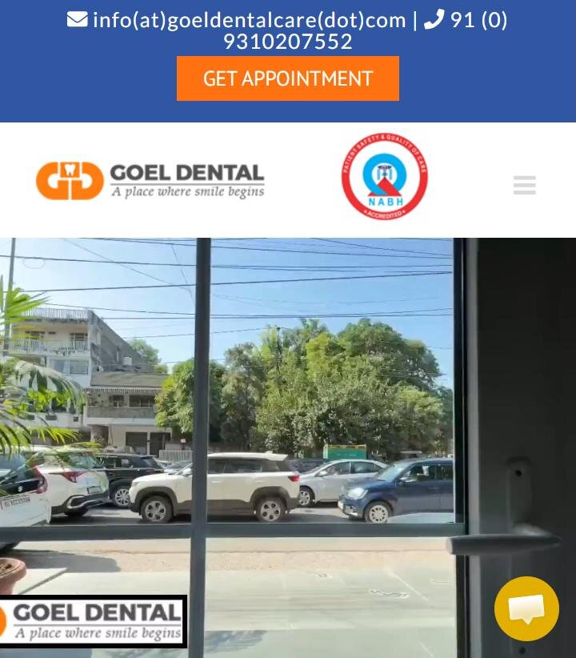

Conversion-focused healthcare website, analytics, automation and search infrastructure.
What will be built, connected, tracked, tested, deployed and monitored in Phase 1, including the seven requirements Dr. Goel asked to make core.
One system, from search to appointment.
Phase 1 replaces the current site with a fast WordPress build and connects it to everything that turns a search into a patient: WhatsApp automation, an AI pre-qualification assistant, booking, server-side tracking, Meta and Google conversion data, local pages, and AI-search-ready content.
| Client requirement | Status in this blueprint | Roadmap |
|---|---|---|
| 1 · Server-side GTM + first-party /gtgtag/ | Core Phase 1 | 07 · 08 |
| 2 · AI triage + smile estimator | Core Phase 1 | 11 |
| 3 · WhatsApp Business Cloud API automation | Core Phase 1 | 09 · 10 |
| 4 · AEO + GEO answer blocks | Core Phase 1 | 22 · 23 |
| 5 · Malviya Nagar / Saket / Kalkaji hubs | Core Phase 1 | 26 |
| 6 · Meta Pixel + Conversions API | Core Phase 1 | 17 · 18 |
| 7 · Before/after sliders + brand showcase | Core Phase 1 | 27 · 28 |
Fee
Timeline
What is not promised
Six objectives, each with a measure.
Be found
Search, Maps, Apple Maps and AI answers understand who the clinic is, where it is and what it treats.
Be chosen
Every page answers price, pain, time and doctor questions and shows real proof.
Respond first
Every enquiry gets a WhatsApp reply within ~30 seconds, at any hour.
Qualify
The assistant and forms separate urgent, high-intent and information-only enquiries.
Measure
Every enquiry carries a reference code from first click to appointment.
Protect
Patient data stays separate from marketing data, with consent recorded.
A WordPress site that leaks enquiries and data.

| Area | Observed 10 Nov 2026 | |
|---|---|---|
| Platform | WordPress 6.7, Avada theme, Slider Revolution, Site Kit | VERIFIED |
| Pages | 96 URLs with .html addresses, incl. test, sample and payment pages | Fix |
| Mobile speed | PageSpeed 25 · largest content shows at 18.6 s | Fix |
| Hero video | 12 MB, 1080p, loaded from delhidentalsmiles.com | Fix |
| No WhatsApp link on the homepage | Fix | |
| Tracking | GA4 + Ads tag present; 0 of 19 Ads conversion actions recording | Fix |
| Images | 28 of 30 homepage images have no alt text | Fix |
| Schema | WebPage + Organization only; no Dentist entity | Fix |
| Maps | 4.8★ · 709 reviews · Maps top 3 for 8 of 12 local searches | Strength |
| Trust | NABH badge, own patient videos, live chat (Crisp) | Strength |
Source: page code, sitemap, PageSpeed Insights and Google search on 10 Nov 2026 (blueprint v1, p. 4 and 49–52).
Seven layers, one loop.
Orange = the seven client requirements, built into the core layers.
Everything below ships in Phase 1.
WordPress build from the approved prototype · treatment, doctor, location, fees, FAQ, case and booking templates · 301 map for 96 URLs
Technical SEO · AEO / GEO answer blocks · schema graph · Search Console · GBP · Apple Business Connect · Malviya Nagar, Saket, Kalkaji hubs
Sticky call / WhatsApp / book · AI smile estimator · booking request · consent forms · before/after cases · brand showcase
WhatsApp Cloud API · instant reply · follow-ups · staff alerts · human takeover · lead log
Web GTM · server-side GTM · /gtgtag/ first-party path · GA4 · Google Ads conversions + offline import · Meta Pixel + CAPI · 14-event matrix · reference codes
Performance budget · plugin governance · DPDP privacy controls · QA gate · deployment · 30-day monitoring
From approvals to ongoing growth.
Weeks (W) count from the date approvals and inputs are complete. Steps 01–32 are in the implementation fee; step 33 is a separate engagement.
Steps 01–03.
Planning & Audit
- Objective
- Lock scope, inputs, access and a measured baseline.
- Tasks
- Kick-off + approval checklist
- Access: domain, hosting, GA4, GTM, Ads, Meta, GBP, Search Console
- Baseline: speed, Maps visibility, conversions
- Depends on
- Client approvals + account access
- Deliverables
- Signed scope · baseline report
- Accepted when
- All access working; baseline recorded and shared
- Third-party
- None
- In fee
- INCLUDED
- Variable cost
- None
- Timing
- Plan · W1
UX / Information Architecture
- Objective
- Turn the prototype into an approved sitemap and page templates.
- Tasks
- Sitemap: treatments, doctors, locations, fees, FAQ, cases, book
- Journeys: pain today · planned treatment · cosmetic · local
- Mobile-first wireframes from the prototype
- Depends on
- 01 · services list CLIENT INPUT
- Deliverables
- Sitemap · template wireframes · journey maps
- Accepted when
- Client signs off sitemap and templates
- Third-party
- None
- In fee
- INCLUDED
- Variable cost
- None
- Timing
- Plan · W1–2
Website Development
- Objective
- Build the production theme from the approved templates.
- Tasks
- Child theme on a lightweight base (no page builder)
- Templates: home, treatment, doctor, location, fees, FAQ, case, book
- Components: answer block, CTA bar, slider, brand grid
- Depends on
- 02
- Deliverables
- Theme + all templates on staging
- Accepted when
- Every template passes the mobile review and QA gate
- Third-party
- Theme licence if a premium base is chosen
- In fee
- INCLUDED
- Variable cost
- Licence ESTIMATE
- Timing
- Build · W2–5
Steps 04–06.
GitHub / Version Control
- Objective
- Every change tracked, reviewable and reversible.
- Tasks
- Private repo: theme, custom plugins, configs, Worker code
- Branches: main → staging → production
- Deploy + rollback procedure
- Depends on
- 01
- Deliverables
- Repository · deploy runbook
- Accepted when
- A rollback is tested on staging
- Third-party
- GitHub (free plan sufficient)
- In fee
- INCLUDED
- Variable cost
- None
- Timing
- Build · W2
WordPress Setup
- Objective
- A fast, secure, maintainable WordPress base.
- Tasks
- Managed hosting: staging + production
- Current WordPress, PHP 8.2+, Cloudflare DNS/CDN/SSL
- Roles, 2FA, auto-backups, mail delivery
- Depends on
- Hosting purchased by clinic
- Deliverables
- Staging + production environments
- Accepted when
- Both environments live over HTTPS; backups verified
- Third-party
- Hosting · Cloudflare (free plan)
- In fee
- INCLUDED
- Variable cost
- Hosting monthly ESTIMATE
- Timing
- Build · W2
Plugin / Dependency Governance
- Objective
- No plugin without a reason, an owner and a speed budget.
- Tasks
- Approved plugin list (p. 40)
- Approval gate for any new plugin
- Per-plugin weight + update log
- Depends on
- 05
- Deliverables
- Plugin register
- Accepted when
- ≤ 15 active plugins, each registered with purpose and owner
- Third-party
- Premium licences only if approved
- In fee
- INCLUDED
- Variable cost
- Licences ESTIMATE
- Timing
- Build · W2
Steps 07–09.
Server-Side GTM
- Objective
- Move tag processing from the phone to a server the clinic controls.
- Tasks
- Provision sGTM (managed Stape or DigitalOcean)
- GA4 + Meta clients, health checks
- Preview / debug workflow
- Depends on
- Hosting choice approved · GTM access
- Deliverables
- Running sGTM container + monitoring
- Accepted when
- Events reach GA4, Ads and Meta via the server in test
- Third-party
- sGTM hosting
- In fee
- INCLUDED
- Variable cost
- Monthly by request volume
- Timing
- Connect · W3
First-Party /gtgtag/ Proxy
- Objective
- Serve tracking from goeldentalcare.com/gtgtag/ (first-party).
- Tasks
- Cloudflare Worker routes /gtgtag/* → sGTM
- Web GTM + GA4 loaded from /gtgtag/
- Fallback if the proxy fails
- Depends on
- 07 · domain on Cloudflare
- Deliverables
- Live proxy path + config in repo
- Accepted when
- All tag requests return 200 from /gtgtag/; site works if proxy is down
- Third-party
- Cloudflare (Workers free tier)
- In fee
- INCLUDED
- Variable cost
- Only above free limits
- Timing
- Connect · W3
WhatsApp Business Cloud API
- Objective
- Official API on the clinic's number, alongside the Business app.
- Tasks
- Meta business verification + WhatsApp account
- Number onboarding (coexistence) + display name
- Webhook endpoint + secure token
- Depends on
- Business documents · number owner access CLIENT INPUT
- Deliverables
- Verified WhatsApp account on the API
- Accepted when
- Test messages send and receive via API and app
- Third-party
- Meta (no platform fee for Cloud API)
- In fee
- INCLUDED
- Variable cost
- Per message (p. 47)
- Timing
- Connect · W2–4
Steps 10–12.
WhatsApp Automated Responses
- Objective
- Reply to every enquiry within ~30 seconds, day or night.
- Tasks
- Lead router (Worker): form/triage → WhatsApp
- Templates: confirmation, fee range, doctor, location, booking link
- Follow-ups, opt-out, human takeover, logging
- Depends on
- 09 · templates approved by Meta · fee ranges CLIENT INPUT
- Deliverables
- Live automation + message log
- Accepted when
- 9 of 10 test leads get the first message within 30 s; STOP works
- Third-party
- Meta templates
- In fee
- INCLUDED
- Variable cost
- Per template message
- Timing
- Connect · W4
AI Smile Estimator / Triage
- Objective
- 45-second guided assistant that qualifies intent and hands off.
- Tasks
- Flow build in Voiceflow (or Landbot)
- Guardrails: no diagnosis, no advice
- Handoff to WhatsApp / call / booking + events
- Depends on
- Fee ranges + approved wording CLIENT INPUT
- Deliverables
- Live assistant on treatment pages
- Accepted when
- All test scripts pass; medical questions get the safe reply
- Third-party
- Voiceflow or Landbot subscription
- In fee
- INCLUDED
- Variable cost
- Monthly + usage credits
- Timing
- Connect · W4–5
Appointment Booking
- Objective
- A booking request that reaches staff in under a minute.
- Tasks
- Request form: treatment group, preferred day/time, contact
- Staff alert + WhatsApp confirmation
- Status: requested → confirmed → attended
- Depends on
- 10 · staff workflow agreed
- Deliverables
- Booking flow + staff alert
- Accepted when
- Request reaches staff < 1 min with its reference code
- Third-party
- Optional scheduler if the clinic wants live slots
- In fee
- INCLUDED
- Variable cost
- Only if a scheduler is chosen
- Timing
- Connect · W4
Steps 13–15.
Forms + Consent
- Objective
- Collect only what is needed, with clear consent.
- Tasks
- Unticked consent: contact + WhatsApp opt-in
- No symptom fields; spam protection
- Consent stored with time and wording version
- Depends on
- Privacy wording reviewed CLIENT INPUT
- Deliverables
- Forms with consent records
- Accepted when
- Consent saved for every submission; no health data to analytics
- Third-party
- None
- In fee
- INCLUDED
- Variable cost
- None
- Timing
- Connect · W4
Web GTM
- Objective
- One clean container, built from a written spec.
- Tasks
- Rebuild container; remove dead tags
- Consent Mode v2 + data layer spec
- Triggers for all 14 events
- Depends on
- 08 · 19
- Deliverables
- Published container + spec
- Accepted when
- Every event fires once in preview; no orphan tags
- Third-party
- None
- In fee
- INCLUDED
- Variable cost
- None
- Timing
- Measure · W4
GA4
- Objective
- Reliable analytics without patient data.
- Tasks
- Key events, custom dimensions (ref, page type, location)
- Internal-traffic filter, 14-month retention
- Links: Google Ads, Search Console
- Depends on
- 14
- Deliverables
- Configured GA4 property
- Accepted when
- Real-time shows all events; key events marked
- Third-party
- None
- In fee
- INCLUDED
- Variable cost
- None
- Timing
- Measure · W4–5
Steps 16–18.
Google Ads Conversion Tracking
- Objective
- Bid on real enquiries and real appointments.
- Tasks
- Replace the 19 dead actions with 5 clean ones
- Enhanced conversions for leads (consented, hashed)
- Offline import: booking confirmed / attended
- Depends on
- 15 · 20
- Deliverables
- Conversion actions + import routine
- Accepted when
- Test conversions recorded; primary vs secondary set
- Third-party
- None
- In fee
- INCLUDED
- Variable cost
- Ad spend paid by clinic
- Timing
- Measure · W5
Meta Pixel
- Objective
- Browser-side Meta events behind consent.
- Tasks
- Pixel via GTM (not a plugin)
- Contact, Lead, Schedule events
- Consent gating
- Depends on
- Meta Business access
- Deliverables
- Pixel live
- Accepted when
- Events Manager shows browser events after consent only
- Third-party
- None
- In fee
- INCLUDED
- Variable cost
- None
- Timing
- Measure · W5
Meta Conversions API
- Objective
- Server copy of each event, deduplicated.
- Tasks
- Meta CAPI tag in sGTM
- Shared event_id browser ↔ server
- Restricted-data check on the ad account
- Depends on
- 07 · 17
- Deliverables
- CAPI live + dedup report
- Accepted when
- Events show as deduplicated; no health parameters sent
- Third-party
- None
- In fee
- INCLUDED
- Variable cost
- None
- Timing
- Measure · W5
Steps 19–21.
Unified Event Tracking Matrix
- Objective
- One spec for every event, platform and consent rule.
- Tasks
- 14 events (p. 32)
- Parameters + never-send list
- Audit: spec = build
- Depends on
- 14–18
- Deliverables
- Tracking spec sheet
- Accepted when
- Audit finds zero gaps between spec and build
- Third-party
- None
- In fee
- INCLUDED
- Variable cost
- None
- Timing
- Measure · W4–5
Reference Code + Attribution
- Objective
- Trace a patient from first click to appointment.
- Tasks
- GD-XXXXX code on WhatsApp, call, form, triage
- First + last touch: UTM, gclid, fbclid
- Lead log with status updates by staff
- Depends on
- 10 · 12 · 13
- Deliverables
- Lead log + attribution report
- Accepted when
- 10 test leads traced end to end
- Third-party
- Google Sheets / Workers D1 (free tier)
- In fee
- INCLUDED
- Variable cost
- None
- Timing
- Measure · W5
Search Console + Technical SEO
- Objective
- A clean, crawlable site with no lost history.
- Tasks
- 301 map for all 96 legacy .html URLs
- Remove test/sample/payment pages from index
- Sitemap, robots, canonicals, 404 monitoring
- Depends on
- 03
- Deliverables
- Redirect map + crawl report
- Accepted when
- 96 of 96 old URLs return 301 to the right page
- Third-party
- None
- In fee
- INCLUDED
- Variable cost
- None
- Timing
- Discover · W5–6
Steps 22–24.
AEO / GEO Answer Blocks
- Objective
- Clear, quotable answers on every key page.
- Tasks
- ≥ 5 answer blocks per treatment, doctor, location page
- Question → direct answer → context
- Dentist review of every medical answer
- Depends on
- Doctor approval · fee ranges CLIENT INPUT
- Deliverables
- Approved answer library
- Accepted when
- Every core page has approved blocks + FAQ schema
- Third-party
- None
- In fee
- INCLUDED
- Variable cost
- None
- Timing
- Discover · W5–7
Structured Data / Schema
- Objective
- Machine-readable clinic, doctors, procedures, FAQs.
- Tasks
- Dentist, Person, MedicalProcedure, FAQPage, Breadcrumb, VideoObject
- One entity graph with stable @ids
- No self-serving review markup
- Depends on
- 22 · 26
- Deliverables
- Schema templates
- Accepted when
- Rich Results Test: 0 errors on every template
- Third-party
- None
- In fee
- INCLUDED
- Variable cost
- None
- Timing
- Discover · W6
Google Business Profile
- Objective
- Maps listing complete, consistent and tracked.
- Tasks
- Categories, services, hours, photos
- UTM-tagged website + booking links
- Review request + reply process
- Depends on
- GBP owner access
- Deliverables
- Optimised profile(s)
- Accepted when
- Profile matches site NAP exactly; UTM link live
- Third-party
- None
- In fee
- INCLUDED
- Variable cost
- None
- Timing
- Discover · W6
Steps 25–27.
Apple Business Connect
- Objective
- Correct place card in Apple Maps for iPhone users.
- Tasks
- Claim + verify
- Hours, photos, website, call action
- Match GBP details
- Depends on
- Apple ID for the clinic
- Deliverables
- Verified Apple place card
- Accepted when
- Place card shows correct details
- Third-party
- None
- In fee
- INCLUDED
- Variable cost
- None
- Timing
- Discover · W6
Malviya Nagar / Saket / Kalkaji Local Hubs
- Objective
- Three genuinely local pages, no doorway copies.
- Tasks
- Malviya Nagar location page
- Saket hub (one metro stop away)
- Kalkaji: branch page or patient hub CLIENT INPUT
- Depends on
- Kalkaji status · local photos/reviews CLIENT INPUT
- Deliverables
- 3 published local pages
- Accepted when
- Each page ≥ 60% unique content + own FAQs
- Third-party
- None
- In fee
- INCLUDED
- Variable cost
- None
- Timing
- Discover · W6–7
Before / After Sliders
- Objective
- Real, consented results shown accessibly.
- Tasks
- Case post type + slider block (≈3 KB JS)
- Consent ID, date, scope per case
- Image pipeline: crop, compress, lazy-load
- Depends on
- Consented cases CLIENT INPUT
- Deliverables
- Case library + slider
- Accepted when
- Keyboard + touch work; every case has a consent record
- Third-party
- None
- In fee
- INCLUDED
- Variable cost
- None
- Timing
- Prove · W6–7
Steps 28–30.
Global Dental Brand Showcase
- Objective
- Show the materials and systems actually used.
- Tasks
- Brand grid: Straumann, Nobel Biocare, Invisalign, 3M Lava
- Logos only where permitted; text otherwise
- No endorsement wording
- Depends on
- Proof of use + logo permission CLIENT INPUT
- Deliverables
- Brand showcase block
- Accepted when
- Each brand has proof of use on file
- Third-party
- None
- In fee
- INCLUDED
- Variable cost
- None
- Timing
- Prove · W7
Performance / Core Web Vitals
- Objective
- Fast on a mid-range phone on mobile data.
- Tasks
- Budget enforcement (p. 37)
- Image pipeline, caching, script deferral
- Facades for video, chat, AI widget
- Depends on
- 03 · 07 · 11
- Deliverables
- Performance report
- Accepted when
- Key templates meet lab targets on staging
- Third-party
- None
- In fee
- INCLUDED
- Variable cost
- None
- Timing
- Build · W7–8
Privacy / DPDP Controls
- Objective
- Patient data separated, consented and minimised.
- Tasks
- Data map, privacy notice, AI disclosure
- Access controls, retention, processor list
- Consent banner + Consent Mode
- Depends on
- Clinic legal / compliance review CLIENT INPUT
- Deliverables
- Privacy pack
- Accepted when
- Notice published after the clinic's review
- Third-party
- Consent banner (free tier possible)
- In fee
- INCLUDED
- Variable cost
- None
- Timing
- Build · W7–8
Steps 31–33.
QA + Deployment
- Objective
- Nothing goes live untested.
- Tasks
- QA checklist (p. 43–44) + client UAT
- DNS cutover in a low-traffic window
- Rollback ready
- Depends on
- All previous steps
- Deliverables
- QA report + go-live
- Accepted when
- QA gate passed; client UAT sign-off
- Third-party
- None
- In fee
- INCLUDED
- Variable cost
- None
- Timing
- Launch · W8
Launch + 30-Day Monitoring
- Objective
- Catch problems in the first month.
- Tasks
- Day 1 / 3 / 7 / 14 / 30 checks
- Fixes for issues found
- 30-day report
- Depends on
- 31
- Deliverables
- 30-day report
- Accepted when
- All P1 issues closed; tracking stable
- Third-party
- None
- In fee
- INCLUDED
- Variable cost
- None
- Timing
- Launch · W9–13
Ongoing Optimisation
- Objective
- Improve campaigns, content and conversion month by month.
- Tasks
- Ads management, CRO, content, reporting
- Depends on
- 32
- Deliverables
- Monthly plan + report
- Accepted when
- Agreed separately
- Third-party
- Ad spend + tools
- In fee
- NOT INCLUDED separate engagement
- Variable cost
- Monthly fee if agreed
- Timing
- Grow · After W13
Tags run on the clinic's server, served from its own domain.
Why it helps
- Cookies set by the clinic's own domain last longer than third-party cookies in Safari
- Fewer requests blocked by ad blockers
- One place to strip or hash data before it leaves
- Lighter page: Meta and Ads code moves off the phone
What it does not do
- Bypass consent: if a patient declines, nothing is sent
- Bypass Apple's privacy rules (ITP, link tracking protection)
- Recover 100% of signals; it improves the share, it does not complete it
- Replace the need for offline appointment data
DNS / domain
- Domain DNS moved to Cloudflare (free plan)
- Path /gtgtag/ on the main domain = first-party, same-origin
- Fallback: subdomain sst.goeldentalcare.com (CNAME to sGTM) if the proxy path is not possible
- SSL on both via Cloudflare
Seven steps, two hosting options.
| Event routing | GA4 | Google Ads | Meta CAPI |
|---|---|---|---|
| page_view / service_view | ✓ | — | PageView only |
| phone / WhatsApp click | ✓ | ✓ conversion | Contact |
| form_submit · booking_complete | ✓ | ✓ conversion | Lead · Schedule |
| lead (server) | ✓ | Enhanced conv. | Lead |
| appointment_completed (offline) | optional | Offline import | server event |
| Hosting option | Planning cost | |
|---|---|---|
| Stape Pro (managed, 500K requests) | $20/mo list · $17/mo annual | ESTIMATE |
| DigitalOcean droplet (self-managed) | Vendor droplet price; we maintain updates | ESTIMATE |
| Cloudflare Worker for /gtgtag/ | Free tier; paid plan only above limits | USAGE-BASED |
Recommendation
Stape prices from stape.io/price, Nov 2026. Infrastructure is billed to the clinic, separate from the implementation fee.
About 45 seconds, five taps, one clear handoff.
Information assistant · not medical advice · data use explained
Hi, I'm the Goel Dental assistant. I can help you find the right treatment page, typical fee ranges and the quickest way to book. I can't diagnose. What brings you here today?
Replace a missing tooth
When would you like to start?
This month
Dental implant fees at the clinic usually range [fee range · CLIENT INPUT]. The final fee depends on your X-ray and the option you choose. Does that range work for you?
Yes
How should the clinic reach you? Your reference is GD-7K2PQ.
Safety reply (fixed text)
Buttons first, AI only to understand free text.
| Intent | Urgency | Priority | Handoff |
|---|---|---|---|
| Tooth pain / problem | Today / this week | High | Call now + WhatsApp; staff alert |
| Missing tooth · straighten teeth | This month + range OK | High | WhatsApp with fee range + booking link |
| Whiter smile · cosmetic | This month | Medium | WhatsApp + cosmetic page |
| Check-up · child | Any | Medium | Booking request |
| Any | Just exploring | Low | Answer page + optional WhatsApp |
| Medical question typed | — | Safe reply | "A dentist needs to examine you" + contact options |
| Event | When | Sent to |
|---|---|---|
| ai_triage_open | assistant opened | GA4 |
| ai_triage_complete | last question answered | GA4 · Ads (secondary) |
| ai_triage_handoff | WhatsApp / call / book chosen | GA4 · Ads · Meta (Contact) |
| ai_triage_abandon | closed before handoff | GA4 (last step only) |
Guardrails
- System prompt limits the model to classifying intent and urgency
- No diagnosis, no treatment advice, no outcome claims
- Fixed, dentist-approved answers for fees and FAQs
- Transcripts kept minimal; no symptoms sent to analytics
- Clear label: "Information assistant, not a dentist"
Lead capture
Platform + cost
Clinic provides
Two ways in, one log, a human always available.
A · Patient taps WhatsApp on the site
B · Patient submits a form or the AI assistant (with WhatsApp opt-in)
Free vs paid
Logging
Failure handling
What Meta requires, and what it costs to run.
| Requirement | Detail | Owner |
|---|---|---|
| Meta Business account | Business verification (registration / GST / utility documents) | Clinic CLIENT INPUT |
| WhatsApp Business account | Created inside the clinic's Meta Business account | Daniel |
| Phone number | Existing clinic number via coexistence: Business app keeps working | Clinic |
| Display name | "Goel Dental Care" reviewed by Meta | Meta |
| Webhook | HTTPS endpoint on the lead router, verified token, signature check | Daniel |
| Templates | Confirmation (utility) · fee + doctor + location (utility) · 2 follow-ups (marketing) | Meta approval |
| Opt-in | Unticked checkbox on forms and assistant; wording stored | Clinic review |
| Opt-out | STOP / "no more messages" → suppression list | Automatic |
| Privacy policy URL | Required by Meta; links to the clinic's notice | Clinic review |
| Meta charge (India) | Per message |
|---|---|
| Marketing template | ₹0.8631 |
| Utility template | ₹0.1150 |
| Authentication | ₹0.1150 |
| Service reply in 24 h window | Free |
| Utility inside open window | Free |
Example month
Rates: Meta INR rate card effective 1 Oct 2026, as published by third-party providers; exclude GST. Meta changes rates quarterly; the clinic is billed directly by Meta.
Three disciplines, one set of pages.
| SEO | AEO | GEO | |
|---|---|---|---|
| Goal | Rank pages in search results | Be the direct answer to a question | Be cited inside AI-written answers |
| Where | Google / Bing results | Featured snippets, People also ask, voice | Google AI Overviews, ChatGPT search, Perplexity, Gemini |
| What it needs | Crawlable pages, relevance, links, speed | Question headings + 40–60-word direct answers | Consistent facts, clear entities, sources worth quoting |
| Built here by | Templates, 301s, internal links, CWV | Answer blocks on every core page | Schema graph, doctor + clinic entities, plain-text fees and hours |
| Measured by | Search Console clicks + positions | Snippet / PAA appearances | Monthly check of 20 fixed AI questions |
Answer block anatomy
Rules
- Facts the clinic approves: fees, hours, doctors, address
- Same facts on site, GBP, Apple, schema and WhatsApp replies
- No superlatives ("best", "#1"), no guarantees
- Dentist review for every medical answer
- Updated date on every block
No ranking, AI citation or traffic outcome is promised. AI systems choose their own sources.
What the blocks look like on real pages.
Is root canal treatment painful?
Root canal treatment is done under local anaesthetic, so most patients feel pressure rather than pain during the procedure. Mild soreness for a few days afterwards is common and usually settles with simple care. Your dentist will explain what to expect for your tooth before starting.
How much does a root canal cost at Goel Dental?
[Fee range CLIENT INPUT]. The final fee depends on the tooth, the number of canals and whether a crown is needed. It is confirmed in writing after examination and X-ray, before treatment starts.
Who is Dr. Shikha Goel?
Dr. Shikha Goel is a dentist at Goel Dental Care, Malviya Nagar. [Qualifications, registration and focus areas CLIENT INPUT]. She sees patients at [days/hours CLIENT INPUT].
How do I reach Goel Dental from Saket?
Malviya Nagar metro station is one stop from Saket on the Yellow Line. The clinic is at [address, as on Google Business Profile] · [walking time from station, measured at build]. [Parking details CLIENT INPUT].
Can I book on WhatsApp?
Yes. Tap WhatsApp on any page; your message includes a reference code so the team can see your request. Replies are instant at any hour, and the front desk confirms the time during clinic hours.
What if I have severe swelling?
Swelling with fever, difficulty swallowing or breathing needs urgent medical attention. Call the clinic on [number] and, if symptoms are severe, go to the nearest emergency department.
Draft wording for illustration. Every medical answer is reviewed and approved by the clinic's dentist before publishing; bracketed items need client input.
Three pages, three different jobs.
Anti-doorway rules
- ≥ 60% unique content per page
- Real local facts only: routes, metro, parking, times, local reviews with permission
- Each page answers a different question
- No swapped place names, no list of 20 suburbs
- One Dentist entity per real clinic location
Malviya Nagar · location page
- Search intent
- dentist malviya nagar · dental clinic malviya nagar (local, high intent)
- Purpose
- Primary location page; matches the Business Profile
- URL
- /dentist-malviya-nagar/
- H1
- Dentist in Malviya Nagar · Goel Dental Care
- Sections
- Address + map · hours · metro + parking · treatments here · doctors · reviews · local FAQs · book
- Internal links
- All treatment hubs, doctor pages, fees, Saket + Kalkaji hubs
- Local FAQs
- Nearest metro? Parking? Open Sunday? CLIENT INPUT · Walk-ins?
- Trust
- NABH badge · 4.8★ / 709 Google reviews (live count) · doctor credentials CLIENT INPUT
- CTAs
- Directions · WhatsApp · Call · Book (all with ref code)
- Schema
- Dentist (address, geo, hours, phone, sameAs) + BreadcrumbList + FAQPage
Useful to someone travelling in, never a copy.
Saket · patient hub
- Search intent
- dentist near saket · dental clinic saket (local, will travel a short distance)
- Purpose
- Show Saket residents how close the clinic is; no claim of a Saket clinic
- URL
- /dentist-near-saket/
- H1
- Dental care near Saket · one metro stop to Malviya Nagar
- Unique content
- Route from Saket (Yellow Line, one stop) · drive time measured at build · what Saket patients most often book CLIENT INPUT · reviews from Saket patients with permission
- Local FAQs
- How long from Saket? Parking? Evening slots? CLIENT INPUT
- CTAs
- Directions from Saket · WhatsApp · Book
- Schema
- WebPage about the Malviya Nagar Dentist entity + areaServed: Saket (no second Dentist entity)
Kalkaji · branch page or patient hub
- Decision
- Is there an active Goel clinic in Kalkaji? CLIENT INPUT The current site has /dentist-in-kalkaji.html and mentions Kalkaji in its description.
- If branch
- /dentist-kalkaji/ · full location page · own address, hours, doctors, Business Profile, Dentist schema with parentOrganization
- If no branch
- /dentist-near-kalkaji/ · route: Kalkaji Mandir (Magenta Line) → Hauz Khas → Malviya Nagar (Yellow Line); WebPage + areaServed
- H1
- Dentist in Kalkaji · Goel Dental Care / Dental care near Kalkaji
- Unique content
- CGHS information if offered CLIENT INPUT · branch-specific doctors and hours · local reviews with permission
- CTAs
- Directions · WhatsApp · Call · Book
- Ads use
- Separate ad groups per hub, each landing on its own page
Browser event + server event + one ID = one conversion.
| Site event | Meta event | Browser | Server | Notes |
|---|---|---|---|---|
| whatsapp_click | Contact | ✓ | ✓ | event_id shared |
| phone_click | Contact | ✓ | ✓ | |
| form_submit | Lead | ✓ | ✓ | hashed phone only with consent |
| booking_start | custom: BookingStart | ✓ | — | may be restricted for health accounts |
| booking_complete | Schedule | ✓ | ✓ | |
| ai_triage_open / complete | custom | ✓ | — | may be restricted |
| lead | Lead | — | ✓ | from lead router |
| high-intent lead | Lead + lead_quality=high | — | ✓ | no treatment named |
| appointment_completed | custom: Appointment | — | ✓ | offline status, no clinical data |
Never sent to Meta
- Treatment, symptoms, diagnosis, medical history
- Free-text messages or assistant transcripts
- Fee amounts tied to a person
- Unhashed name, phone or email
Meta health restrictions
Consent
Real results, consented, accessible and light.
Case card (UI)
Mobile
| Area | Implementation |
|---|---|
| WordPress | Custom post type "Case" + ACF fields (before, after, treatment group, dentist, consent ID, consent date, scope, expiry) + one lightweight block |
| Performance | ≈ 3 KB vanilla JS, no slider plugin · WebP/AVIF at 2 sizes · lazy-loaded below the fold · fixed aspect ratio (no layout shift) |
| Accessibility | Native range input with label, visible focus, arrow keys, alt text describing the change without identifying the person |
| Image handling | Same angle and lighting · crop to the mouth where possible · strip EXIF/location data |
| Consent | Written consent per case: website use (social and ads asked separately) · withdrawal removes the case within 7 days · guardian consent for minors |
| Ads | Not used in Meta ads (Meta does not allow before/after in health ads); website only unless a platform permits it |
| Professional rules | Clinic confirms use with its advisor under dental advertising rules CLIENT INPUT |
Materials actually used, shown honestly.
| Brand | Shown as | Evidence needed | Status |
|---|---|---|---|
| 3M Lava (crowns) | Product name + how used | Already listed on the current site | VERIFIED on site |
| Straumann (implants) | Name; logo if guidelines allow | Invoice / supplier confirmation | CLIENT INPUT |
| Nobel Biocare (implants) | Name; logo if guidelines allow | Invoice / supplier confirmation | CLIENT INPUT |
| Invisalign (aligners) | Name; logo only for certified providers | Provider status (Invisalign doctor locator) | CLIENT INPUT |
Disclaimer under the grid
UI
- "Materials & systems we use" grid, 4 tiles
- Each tile: name · product · one line on where it is used
- Links to the relevant treatment page
- No carousel
Build
- Inline SVG logos < 2 KB each, or text tiles
- Grayscale until hover; no layout shift
- ACF repeater so the clinic can edit the list
Not shown
- Brands not used at the clinic
- "Official partner" or "certified" wording without proof
- Logos copied from the brand's site without permission
14 events, one spec.
| Event | Trigger | Platforms | Parameters | Consent | Browser | Server | Conversion | Purpose |
|---|---|---|---|---|---|---|---|---|
| service_view | Treatment page view | GA4 | page_type, service_group, location_id | Analytics | ✓ | — | No | Content demand |
| faq_open | Answer block expanded | GA4 | question_id | Analytics | ✓ | — | No | Content gaps |
| directions_click | Directions / map tap | GA4 · Ads | location_id, cta_position | Analytics + ads | ✓ | ✓ | Secondary | Visit intent |
| phone_click | tel: link | GA4 · Ads · Meta | ref_id, location_id, cta_position | Analytics + ads | ✓ | ✓ | Primary | Enquiry |
| whatsapp_click | wa.me link | GA4 · Ads · Meta | ref_id, cta_position | Analytics + ads | ✓ | ✓ | Primary | Enquiry |
| form_submit | Valid form sent | GA4 · Ads · Meta | ref_id, form_id | Analytics + ads | ✓ | ✓ | Primary | Enquiry |
| booking_start | Booking form opened | GA4 · Meta | ref_id | Analytics + ads | ✓ | — | No | Funnel drop-off |
| booking_complete | Booking request sent | GA4 · Ads · Meta | ref_id, slot_part (am/pm) | Analytics + ads | ✓ | ✓ | Primary | Appointment intent |
| ai_triage_open | Assistant opened | GA4 | page_type | Analytics | ✓ | — | No | Assistant reach |
| ai_triage_complete | All questions answered | GA4 · Ads | intent_group, urgency, priority | Analytics + ads | ✓ | — | Secondary | Qualification |
| ai_triage_handoff | Channel chosen | GA4 · Ads · Meta | ref_id, channel | Analytics + ads | ✓ | ✓ | Secondary | Assistant → enquiry |
| ai_triage_abandon | Closed before handoff | GA4 | last_step | Analytics | ✓ | — | No | Fix the flow |
| lead | Lead router logs a valid lead | GA4 · Ads · Meta | ref_id, channel, lead_quality | Recorded consent | — | ✓ | Primary | One lead = one record |
| appointment_completed | Staff marks attended | Ads (offline) · Meta · GA4 | ref_id / gclid, status | Recorded consent | — | ✓ | Primary (offline) | Bid on real patients |
service_group and intent_group are broad categories (e.g. "implants"), sent to GA4 only for content reporting, never to Meta. Google Ads receives conversions, not treatment names.
What is never sent, and how consent controls the rest.
Never sent to GA4, Google Ads, Meta or any marketing tool
- Symptoms, diagnosis, treatment plans, medical history
- Free-text from forms, chat or WhatsApp
- Names, phone numbers or emails in plain text
- Fees quoted to a specific person
- Before/after case identity
Consent Mode v2 mapping
| Banner choice | Signal | Effect |
|---|---|---|
| Analytics | analytics_storage | GA4 cookies |
| Ads | ad_storage | Ads + Meta cookies |
| Ads data | ad_user_data | hashed contact for enhanced conv. |
| Personalisation | ad_personalization | remarketing lists |
Identifiers used instead
- Reference code GD-XXXXX (random, no meaning)
- GA4 client ID (first-party cookie)
- gclid / fbclid from the ad click
- Hashed phone, only with ads consent, only server-side
- Lead quality as a label (high / medium / low)
From first click to attended appointment.
| Lead log field | Example | Who sees it |
|---|---|---|
| ref_id | GD-7K2PQ | Staff, Daniel |
| first / last source | google / cpc / root-canal-mn | Staff, Daniel |
| click IDs | gclid, fbclid | System only |
| channel | Staff, Daniel | |
| intent group | implants | Staff only |
| status | new → contacted → booked → attended | Staff |
| consent flags + version | contact ✓ · whatsapp ✓ · v1.2 | Staff, Daniel |
Calls
What it answers
Example ID
Hubs, not volume. Every old URL redirected.
| Section | URL pattern |
|---|---|
| Home | / |
| Treatments hub | /treatments/ |
| Treatment (×8–10) | /treatments/root-canal-treatment/ … |
| Doctors | /doctors/dr-shikha-goel/ … |
| Local hubs | /dentist-malviya-nagar/ · /dentist-near-saket/ · Kalkaji |
| Fees | /fees/ |
| FAQ hub | /faq/ |
| Cases | /before-after/ |
| Book | /book/ |
| Contact | /contact/ |
| Blog (few, question-led) | /blog/… |
| Legal | /privacy/ · /terms/ · /ai-assistant/ |
Page rules
- Title: Treatment in Malviya Nagar | Goel Dental Care (≤ 60 chars)
- One H1 per page; H2s are patient questions
- Meta description written per page, ≤ 155 chars
- Lowercase slugs, no .html, no dates
- Every image has descriptive alt text
- Each treatment links to 2 related treatments, its doctor, fees and nearest hub
301 map · 96 legacy URLs
- Each old URL mapped to its closest new page (spreadsheet in repo)
- Duplicates (e.g. microscopic / single-sitting RCT) → one root canal hub
- Test, sample and payment pages → 410 Gone
- Thank-you pages → noindex
- Verified with a crawl: 96 of 96 resolve in one hop
Cosmetic pages
One entity graph the machines can follow.
| Template | Schema types |
|---|---|
| Home | Dentist, WebSite, WebPage |
| Treatment | MedicalProcedure, FAQPage, BreadcrumbList |
| Doctor | Person (Physician details), BreadcrumbList |
| Malviya Nagar | Dentist, FAQPage, BreadcrumbList |
| Saket / Kalkaji hub | WebPage (about #clinic-mn, areaServed), FAQPage |
| Fees / FAQ | FAQPage, BreadcrumbList |
| Home video | VideoObject |
Rules
- Stable @id URLs so every page points to the same entities
- Values match visible page text exactly
- No self-serving review or rating markup (not eligible for rich results)
- Validated with the Rich Results Test before launch
Engineering targets for a mid-range phone on mobile data.
| Metric / resource | Target | How it is held |
|---|---|---|
| LCP (largest content) | ≤ 2.5 s (field, 75th percentile mobile) | Hero image ≤ 150 KB, preloaded; no video before load |
| INP (responsiveness) | ≤ 200 ms | Little JS; no page builder; long tasks split |
| CLS (layout shift) | ≤ 0.1 | Fixed aspect ratios, reserved space for banners and widgets |
| JavaScript (first party) | ≤ 120 KB compressed per page | Vanilla JS; per-template loading |
| CSS | ≤ 60 KB compressed; critical CSS inline | One stylesheet, unused CSS removed |
| Images | ≤ 150 KB above the fold; WebP/AVIF; lazy below | Upload pipeline resizes and compresses |
| Fonts | ≤ 2 families, ≤ 4 WOFF2 files, self-hosted, swap | Subset to Latin |
| Third-party scripts at load | 1: GTM (from /gtgtag/) | Meta + Ads moved server-side |
| Deferred third parties | AI assistant, YouTube, maps: click-to-load | Facades |
| Active plugins | ≤ 15 | Approval gate (p. 40) |
| Tracking scripts in browser | GTM only; Pixel loads after consent | sGTM does the rest |
Starting point
Not a guarantee
Checked
Every layer, and the decision behind it.
| Layer | Implementation | Why |
|---|---|---|
| WordPress | Latest stable, lightweight base theme + custom child theme, block editor, ACF for structured content | Easy editing without page-builder weight |
| Hosting | Managed WordPress (LiteSpeed or Nginx, PHP 8.2+, server cache, daily backups, staging) | Speed + support; clinic owns the account |
| CDN + DNS + SSL | Cloudflare free plan: DNS, CDN, SSL, WAF basics, Workers | Fast in India; hosts /gtgtag/ and the lead router |
| Caching | Host page cache + browser cache + Cloudflare edge for static files | One cache layer per job; no conflicts |
| Images | Resize on upload, WebP/AVIF, srcset, lazy-load, CDN delivery | Biggest speed win |
| JavaScript / CSS | Hand-written, per-template, no jQuery dependency where avoidable | Meets the budget |
| Database | Revisions limited, transients cleaned, weekly optimisation | Stays small |
| Security | 2FA for admins, least-privilege roles, WAF, login rate limit, auto minor updates, file editing off | Health data nearby means higher bar |
| Backups | Daily host backups (14 days) + weekly off-site copy; restore tested | Recoverable in hours |
| Staging | Password-protected, noindex, same stack | Nothing tested on the live site |
| GitHub + deploy | Theme, custom plugins, Worker code in Git; deploy by pipeline or SFTP from tagged releases | Every change reversible |
| Cloud server | sGTM (Stape or DigitalOcean) · Cloudflare Workers + D1 for lead router and log | Low cost, clinic-owned |
| Appointment system | Booking request + staff confirmation; scheduler software only if the clinic chooses | Works with the front desk's process |
The order that avoids rework.
Meta business verification and template approval are started in week 1 because Meta's review time is outside our control.
No plugin because it is convenient.
| Category | Purpose | Risk / speed | Required | Decision rule |
|---|---|---|---|---|
| SEO (one) | Titles, sitemap, redirects | Low | Yes | Rank Math or Yoast, not both |
| Custom fields | Treatments, doctors, cases, FAQs | Low | Yes | ACF; no front-end JS |
| Forms | Consent, webhook to lead router | Medium | Yes | Must support consent + webhooks |
| Cache (one) | Page cache, minify | Medium | Yes | Host's own cache first |
| Images | Compression, WebP/AVIF | Low | Yes | Host/CDN first; plugin if missing |
| Backups | Off-site copy | Low | Yes | Host + one off-site tool |
| SMTP | Reliable email alerts | Low | Yes | One mailer |
| Consent banner | Consent Mode v2 | Medium | Yes | Lightweight, Consent Mode certified |
| Security | Login, firewall | Medium | If host lacks | Host WAF + Cloudflare first |
| Page builders | Drag-and-drop layouts | High weight | No | Templates are code |
| Slider / WhatsApp / chat widgets | UI widgets | High weight | No | Custom components |
| Tracking plugins (Pixel, Site Kit) | Tags | Duplicates | No | All tracking via GTM |
Plugin approval gate
Patient data and marketing data never share a system.
Marketing data
- Anonymous events, page views
- Campaign source, click IDs
- Ref code, lead quality label
- Lives in: GA4, Google Ads, Meta, sGTM
Enquiry data (personal)
- Name, phone, consent flags, channel
- Intent group, preferred time, status
- Lives in: lead log (access-controlled), WhatsApp
- Visible to: front desk, doctors, Daniel (setup/support)
Clinical records
- Diagnosis, treatment, X-rays, notes
- Lives in: the clinic's own records system only
- Never on the website, lead log or marketing tools
| Control | How |
|---|---|
| Data minimisation | Forms ask only what is needed to call back; no symptom fields |
| Access controls | Named accounts, 2FA, least privilege; staff removed on exit |
| Processors | Hosting, Cloudflare, Stape/DigitalOcean, Google, Meta, Voiceflow/Landbot, Google Workspace · listed in the privacy notice |
| Retention | Unconverted enquiries anonymised after a period the clinic sets (suggested 12 months) CLIENT INPUT |
| Security | HTTPS everywhere, encrypted tokens, signed webhooks, audit log of exports |
Every consent recorded, every assistant labelled.
| Point | Consent / notice | Record kept |
|---|---|---|
| Website visit | Cookie / analytics banner: analytics and ads choices separate; reject as easy as accept | Consent state + version |
| Contact form · booking | Purpose notice + unticked contact consent | Timestamp, wording version, ref code |
| WhatsApp updates | Separate unticked opt-in; STOP to opt out | Opt-in + opt-out events |
| AI assistant | "Information assistant, not a dentist" + link to /ai-assistant/ explaining data use | Disclosure version shown |
| Before/after photos | Written consent per case: scope, withdrawal, minors via guardian | Signed form ID in the case record |
| Privacy notice | DPDP Act 2023: purposes, data, processors, retention, rights, grievance contact CLIENT INPUT | Published version + date |
| Data requests | Access, correction, erasure handled by the clinic within its stated timeline | Request log |
Conversions, automation and data.
| Area | Check | Acceptance |
|---|---|---|
| Functional | All links, CTAs, menus and search work | 0 broken links in crawl |
| Forms | Validation, consent saved, spam blocked, staff alert | 10/10 test submissions logged with consent |
| Booking | Request → staff alert → WhatsApp confirmation | Alert < 1 min; ref code present |
| Path A + B, follow-ups, STOP, human takeover, failure alert | 9/10 first replies < 30 s; STOP honoured | |
| AI assistant | All intents, safety reply, handoffs, events | All test scripts pass; no medical advice given |
| Tracking | 14 events fire once with correct parameters | GA4 DebugView + sGTM preview match spec |
| Analytics | Key events, conversions, offline import test | Test conversions visible in GA4, Ads, Meta |
| Consent | Reject blocks ads + analytics tags | No ads/analytics hits after reject |
| Privacy | No health data in any payload | Payload audit: 0 sensitive fields |
| Redirects | 96 legacy URLs | 96/96 → 301 → correct 200 page |
Search, proof, devices and security.
| Area | Check | Acceptance |
|---|---|---|
| Technical | HTTPS, canonicals, robots, sitemap, 404 page | Crawl clean; sitemap valid |
| SEO | Titles, H1s, meta, alt text, internal links | 100% of pages pass checklist |
| Schema | Every template | Rich Results Test: 0 errors |
| Local SEO | NAP identical on site, GBP, Apple, schema | Exact match |
| AEO / GEO | Answer blocks approved + dated | ≥ 5 per core page, all approved |
| Before / after | Consent IDs, keyboard, touch, lazy-load | Every case has a consent record |
| Brand showcase | Proof of use + permission on file | Every tile backed |
| Mobile + desktop | Android Chrome, iPhone Safari, desktop Chrome/Edge/Safari | No layout or tap issues |
| Accessibility | Contrast, focus, labels, keyboard, alt | WCAG 2.1 AA checks pass on key templates |
| Performance | Budget on staging per template | Targets on p. 37 met in lab tests |
| Security | 2FA, roles, updates, backups restore | Restore tested; no admin without 2FA |
QA gate
Cut over in a quiet hour, with a way back.
Rollback
Access needed
Communication
Five check-ins, one report.
| When | Checks | Output |
|---|---|---|
| Day 1 | Uptime, forms, WhatsApp replies, events, 404s, redirect hits | Fix list |
| Day 3 | Conversion counts vs leads in log; consent rates; sGTM health | Tracking sign-off |
| Day 7 | Search Console coverage, crawl errors, page speed (lab) | SEO check |
| Day 14 | Lead quality from assistant; WhatsApp response times; booking drop-off | Flow tweaks |
| Day 30 | All of the above + first real-user CWV + leads traced end to end | 30-day report |
One fee for the work. Third-party costs paid directly.
Phase-1 implementation fee
| What | Paid to | |
|---|---|---|
| A · Implementation fee | ₹40,000 · steps 01–32 | Daniel Deepak |
| B · One-time third-party | Premium theme / plugin licences if chosen | Vendors directly |
| C · Monthly recurring | Hosting, sGTM hosting, AI assistant platform | Vendors directly |
| D · Usage-based | WhatsApp messages, AI credits above allowance, cloud above free tiers | Meta / vendors |
| E · Optional future | Scheduler software, CRM, call tracking, ongoing optimisation, ad spend | As agreed |
Payment schedule
Ownership
Planning ranges, labelled as estimates.
| Item | Type | Planning range (excl. GST) | |
|---|---|---|---|
| Managed WordPress hosting | C · monthly | ≈ ₹800 – ₹3,500 / month (by provider and plan) | ESTIMATE |
| Cloudflare (DNS, CDN, SSL, Workers) | C · monthly | ₹0 on free plan; paid Workers only above free limits | ESTIMATE |
| Server-side GTM (Stape Pro) | C · monthly | $20/mo list ($17/mo annual) ≈ ₹1,500 – ₹1,800 | ESTIMATE |
| AI assistant · Voiceflow Pro | C · monthly | ≈ $60/mo per editor seat + credits ≈ ₹5,300+ | ESTIMATE |
| AI assistant · Landbot (alternative) | C · monthly | Starter $45/mo monthly ($36 annual) ≈ ₹3,200 – ₹4,000 | ESTIMATE |
| WhatsApp Cloud API | D · usage | Utility ₹0.115 · marketing ₹0.8631 per template; service replies free | USAGE-BASED |
| AI usage above allowance | D · usage | Voiceflow ≈ $0.005 / message above credits | USAGE-BASED |
| Premium licences (theme, ACF Pro, cache, consent) | B · yearly | ≈ ₹0 – ₹20,000 / year depending on choices | ESTIMATE |
| Email alerts (SMTP) | C · monthly | Free tier usually sufficient | ESTIMATE |
| Advertising spend | E | Set by the clinic; paid to Google / Meta | — |
How it adds up
USD converted at about ₹88. Sources: stape.io/price; Landbot and Voiceflow plan pages as summarised by eesel.ai and activepieces (Oct–Nov 2026); Meta INR rate card effective 1 Oct 2026. Vendor prices can change; each is confirmed with the clinic before purchase.
What could slow or change Phase 1.
| Risk / dependency | Impact | Mitigation | Owner |
|---|---|---|---|
| Meta business verification delayed | WhatsApp API + CAPI start late | Start in week 1; site launches with wa.me links if needed | Clinic + Daniel |
| WhatsApp templates rejected | Automated first message delayed | Utility wording, no promotional claims; resubmit | Daniel |
| Meta restricts health-related events | Fewer optimisable events in Meta | Check account in step 18; rely on Lead/Contact + offline | Meta |
| Patients decline consent | Lower tracked volumes | Report modelled + observed; never bypass consent | — |
| Fees, doctor bios, wording not supplied | Answer blocks, assistant and WhatsApp can't go live | Input list in week 1; placeholders blocked from launch | Clinic |
| Before/after consent not available | Fewer or no cases at launch | Launch with consented cases only | Clinic |
| Brand proof / logo permission missing | Text tiles instead of logos | Text tiles + disclaimer | Clinic |
| Kalkaji status unclear | Wrong page type | Decide before step 26 | Clinic |
| DNS / registrar access missing | No /gtgtag/ proxy, no cutover | Access in week 1; subdomain fallback for sGTM | Clinic |
| Third-party price changes | Running cost moves | Quarterly cost check; alternatives listed | Daniel |
Phase 1 is complete when all of these are true.
Website + search
- All approved templates live on production
- 96/96 legacy URLs redirected; junk pages removed
- Schema valid on every template; GBP + Apple verified
- Malviya Nagar, Saket, Kalkaji pages live with unique content
- Answer blocks approved on every core page
- Performance targets met in lab tests on key templates
Conversion + automation
- WhatsApp first reply < 30 s in 9 of 10 tests
- Booking request reaches staff < 1 min
- AI assistant passes all scripts incl. safety replies
- Human takeover and STOP work
- Before/after cases each have a consent record
- Brand tiles each have proof on file
Measurement
- 14 events match the spec in GA4 and sGTM
- Google Ads + Meta conversions recorded (browser + server, deduplicated)
- Offline appointment upload tested
- 10 test leads traced from click to status
Privacy + handover
- Payload audit: no health data in marketing tools
- Privacy notice published after clinic review
- All accounts owned by the clinic
- Admin + staff training done; runbook delivered
- 30-day report delivered
Twenty things the clinic receives and owns.
Production WordPress site + staging
Custom theme + components (Git)
301 redirect map (96 URLs)
Server-side GTM + /gtgtag/ proxy
WhatsApp Cloud API + automation
AI smile estimator
Booking + forms with consent
Lead router + lead log
GA4, Google Ads, Meta Pixel + CAPI
Tracking spec (14 events)
Answer block library
Schema templates
Local hubs ×3
Before/after case system
Brand showcase
GBP + Apple Business Connect
Privacy pack (for review)
QA report + UAT sign-off
Runbook + staff training
30-day report
What only the clinic can provide.
| Item | Needed for | By |
|---|---|---|
| Admin access: domain/DNS, hosting, Google (GA4, Ads, GTM, Search Console, GBP), Meta Business | Steps 01, 05, 07–08, 14–18, 24 | Week 1 |
| Business documents for Meta verification | WhatsApp API, CAPI | Week 1 |
| Approved fee ranges per treatment | Answer blocks, assistant, WhatsApp | Week 2 |
| Doctor details: qualifications, registration, photos | Doctor pages, schema, answers | Week 2 |
| Kalkaji: branch or not; Saket / local photos and reviews with permission | Local hubs | Week 3 |
| Before/after cases with written consent | Case system | Week 4 |
| Brand proof of use + logo permission | Brand showcase | Week 4 |
| Privacy notice + consent wording review by advisor | Launch | Week 6 |
| Staff for the lead log and WhatsApp replies; 1 h training | Launch | Week 7 |
| Purchase of third-party services after confirmation | Steps 05, 07, 11 | As scheduled |
| Timely review: approvals within 3 working days | Whole timeline | Ongoing |
About 8 weeks to launch, then 30 days of monitoring.
Week 1 starts when approvals, access and payment are in place. External reviews (Meta verification, template approval) and late client inputs can move dates.
Approve the scope, start access and verification this week.
Disclaimers
- No guaranteed rankings, leads, revenue or AI citations
- The AI assistant does not diagnose or give medical advice
- Third-party, WhatsApp and cloud pricing can change and varies with usage
- Performance targets are engineering targets, not guarantees
- Legal and regulatory compliance needs the clinic's professional review
- Before/after content requires appropriate written patient consent
- Brand names and logos follow each owner's trademark and licensing rules
Fifteen approvals before build starts.
01 Phase-1 scope incl. all 7 core requirements
02 Implementation fee ₹40,000 + payment schedule
03 Third-party services: hosting · sGTM (Stape / DigitalOcean) · Voiceflow or Landbot
04 Account access list (p. 52)
05 Meta business verification documents
06 Fee ranges per treatment
07 Doctor details + photos
08 Kalkaji: branch or patient hub
09 Before/after cases + written consent
10 Brands used + logo permission
11 WhatsApp templates + opt-in wording
12 AI assistant wording + safety reply
13 Privacy notice to the clinic's advisor
14 Cosmetic pages: this site or Delhi Dental Smiles
15 Go-live window
Approved by: ____________________ (Dr. Saurabh Goel) · Date: __________